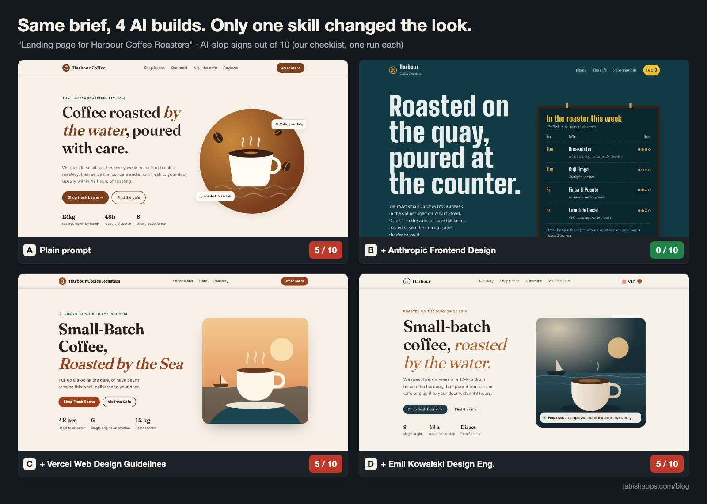
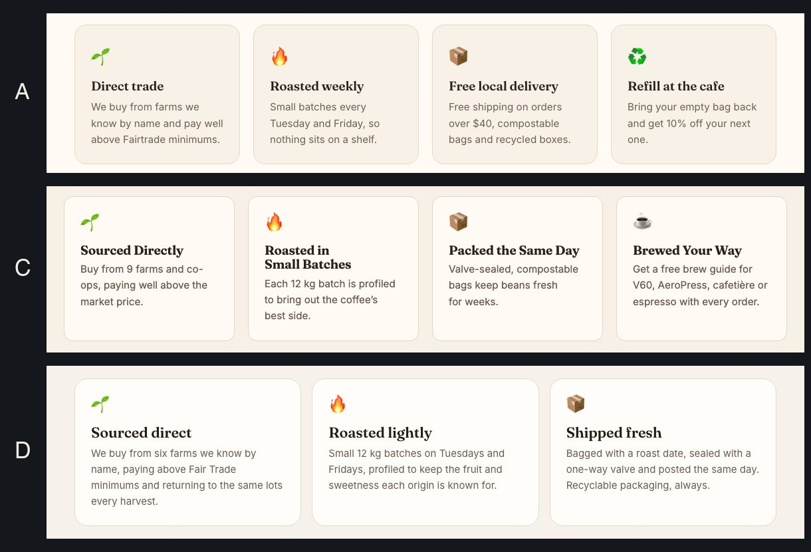
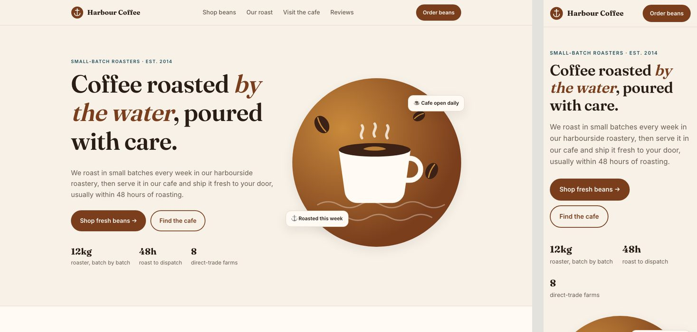
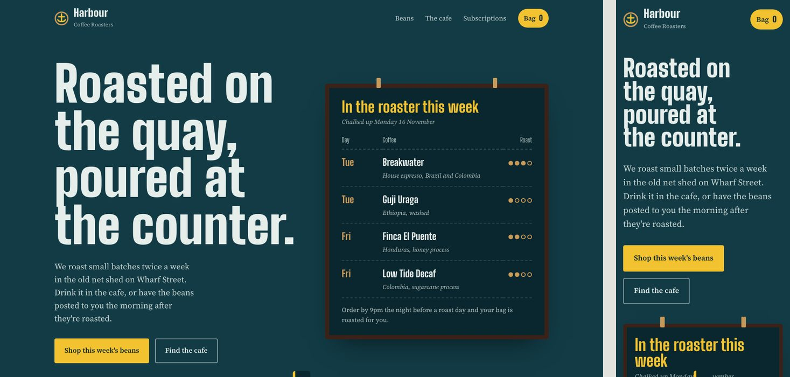
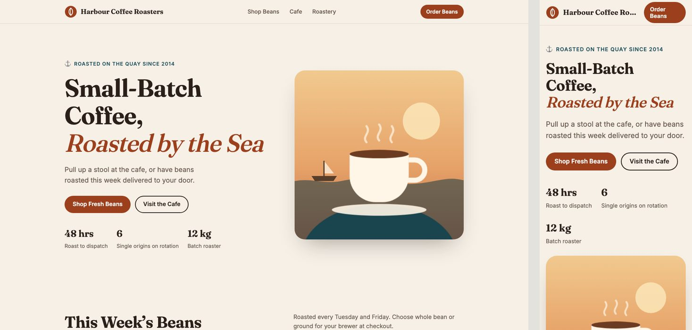
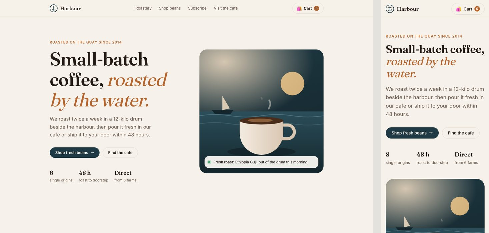

I tested 3 anti AI slop design skills on the same page. Only one changed the design
- The test: one landing page for a made-up coffee roaster, built 4 times by an AI agent: once with a plain prompt, and once with each of 3 popular design skills.
- The result: the plain prompt and two of the skills gave almost the same page: same fonts, same colours, same emoji cards. Only Anthropic's Frontend Design skill produced a different design, and it took our "AI slop" count from 5 out of 10 to 0.
- The advice: install one skill for the look (Frontend Design) and one for the details (Vercel's Web Design Guidelines). The other skill is good, but it is about animation, not looks.

You can usually tell when a website was made by AI. The same cream background, the same serif headline with one word in italics, the same row of cards with an emoji on top. People call it "AI slop". Skills are text files you give to a coding agent to change how it works, and some of them promise to fix exactly this. So I tested three.
The idea came from a post by @BenjaminUIX on X listing "10 skills that kill AI slop" (it has about 7,600 likes). The post ends with good advice: "Install 2 or 3, not all 10." But which 2 or 3? The post doesn't show what the skills actually do. So I picked three from the list that are plain text instructions and ran the same job with each.
The test
The brief was one sentence, the kind a busy person would really type: build a single-file HTML landing page for Harbour Coffee Roasters, a small local coffee roaster with a cafe and an online shop for beans. No details about colours, hours or prices. The AI had to decide everything.
I built it four times. Each version was made by a fresh agent (Claude Opus 5.5 in Claude Code) that saw only the brief, plus one skill file for B to D. No agent could see the others' work. The same rules applied to all four: one HTML file, no photos (only CSS, inline SVG or emoji), and Google Fonts allowed.
| Version | What the agent got | What the skill is about |
|---|---|---|
| A | The brief only | Nothing, this is the baseline |
| B | Brief + Anthropic's Frontend Design skill | Making a distinct visual design. It even lists the looks AI tends to repeat and asks the agent to avoid them. |
| C | Brief + Vercel's Web Design Guidelines | A long checklist of interface rules: accessibility, focus states, forms, typography details. It is written for reviewing code, so I asked the agent to follow it while building and then check its own file once. |
| D | Brief + Emil Kowalski's design engineering skill | Mostly animation and interaction: easing curves, timing, press states, when not to animate. |
Then I took screenshots of every version with headless Chrome at desktop size (1440 px wide) and phone size (390 px wide), in light mode.
The AI slop design checklist (written before I saw any result)
Before looking at the pages, I wrote down 10 signs of AI slop. Each sign present is one point. Lower is better.
- A gradient used as decoration in the hero
- Emoji used as icons
- Vague marketing copy ("elevate your experience", "more than just coffee")
- Everything centered
- A row of identical cards, each with an icon, a title and one line
- Low-contrast text
- No real details: missing at least two of opening hours, address and prices
- Broken or cramped on a phone
- Fade-in on every section, or every card lifting on hover
- A small ALL-CAPS label above every section heading
The results
| Sign | A: plain | B: Frontend Design | C: Vercel | D: Emil |
|---|---|---|---|---|
| Decorative gradient in hero | yes | no | yes | yes |
| Emoji as icons | yes | no | yes | yes |
| Vague marketing copy | no | no | no | no |
| Everything centered | no | no | no | no |
| Identical icon cards | yes (4) | no | yes (4) | yes (3) |
| Low-contrast text | no | no | no* | no |
| No hours, address or prices | no | no | no | no |
| Cramped on phone | no | no | yes | no |
| Motion or hover lift everywhere | yes | no | yes | yes |
| ALL-CAPS label on every section | yes | no | no | yes |
| Total (lower is better) | 5 | 0 | 5 | 5 |
* C has a dark mode. In dark mode, its cafe section turns light blue while the text stays near-white, which is very hard to read. I scored the light mode, which is what most visitors see.
Two things surprised me. First, the plain prompt was not bad. None of the four versions wrote anything like "elevate your experience", and all four invented useful details: opening hours, an address, prices per 250 g bag. The old slop signs are gone. New ones took their place.
Second, A, C and D are almost the same page. Look at the fonts: all three picked Fraunces for headings and Inter for text. All three have a cream background, a dark serif headline with an orange italic phrase, two rounded buttons and a row of three stats under them ("48h", "12 kg"). Here are their feature cards side by side:

Three agents, three different skill files, no contact between them, and they all reached for 🌱 🔥 📦. That is what "AI slop" really is: not ugly, just the same.
What each skill changed
A: plain prompt

A clean, friendly page that would be fine for a real cafe. It has a menu with prices, opening hours and an address. But it uses the default kit: a gradient circle behind a cup, emoji icons, a small uppercase label above every heading, and cards that lift when you hover them.
B: Anthropic Frontend Design

The only version that looks like someone made a choice. The agent picked a harbour-and-chalkboard idea and ran with it: tall condensed headings, a teal and yellow palette, and a "roasted this week" board with the day each coffee is roasted. The coffee bags are flat colour blocks, not emoji. The order steps are numbered 1 to 4 because they really are steps.
This makes sense when you read the skill. It asks the agent to start from the subject (a harbour, a roaster) instead of a template, to plan the colours and fonts first, and then to check that plan against a list of looks that AI repeats. That list describes A, C and D quite closely. It also asks for restraint: one bold idea, the rest quiet.
It isn't perfect. On a phone, the four coffee bags become very tall coloured blocks, which is a lot of scrolling. And there is a small bug: the empty "added to bag" message box peeks up from the bottom edge of the screen before you click anything.
C: Vercel Web Design Guidelines

Visually, almost the same as A. Under the hood, it's the most careful version. It is the only one with a "skip to content" link for keyboard users, balanced line breaks in headings, numbers formatted with the browser's own locale tools, and clear focus outlines. Following the guidelines' "Title Case" rule made the buttons read "Shop Fresh Beans" and "Add to Bag", which is fine but slightly stiff.
On a phone, the header is cramped: the shop name is cut off as "Harbour Coffee Ro…". And as noted above, its dark mode has a real contrast bug. So the checklist didn't catch everything, but that's expected: it's a list of rules, not a design brief.
D: Emil Kowalski's design engineering

Again the same family as A. What changed is how it moves. Buttons shrink slightly when pressed, transitions use custom easing curves, hover effects only run on devices with a mouse, and motion is turned down for people who ask for less. There is also a filter for the bean list and a weekly / fortnightly / monthly switch for the subscription. Those details feel nice when you use the page, but they don't show in a screenshot.
It also fades in each section as you scroll, which is the one animation habit most likely to feel "AI". And a small layout slip: prices like "£11.50 / 250 g" break so the "g" lands on its own line.
What you can't see in the screenshots
I also searched each file for a few things the skills talk about. Numbers are how many times each appears in the code.
| Detail | A | B | C | D |
|---|---|---|---|---|
| "Skip to content" link | 0 | 0 | 2 | 0 |
| Visible keyboard focus styles | 1 | 2 | 4 | 2 |
| Respects "reduce motion" | yes | yes | yes | yes |
| Custom easing curves | 0 | 0 | 0 | 3 |
| Press feedback on buttons | 0 | 0 | 1 | 4 |
| Hover effects only on mouse devices | 0 | 0 | 0 | 4 |
| Even-width numbers for prices | 0 | 1 | 4 | 1 |
| Fonts | Fraunces + Inter | Big Shoulders + Source Serif | Fraunces + Inter | Fraunces + Inter |
So each skill did its own job. It's just that only one of them has "make it look different" as its job.
Verdict: which 2 to install
- Anthropic's Frontend Design, if your problem is "it looks like every other AI site". In this test it was the only skill that changed the design, and it was the only page with zero slop signs.
- Vercel's Web Design Guidelines, as a second pass. Run it as it was meant to be used: ask the agent to review the finished page against it. It catches accessibility and detail problems that a design skill ignores.
Emil Kowalski's skill is worth having when you build interactive parts: menus, drawers, toasts, anything that moves. For a mostly static landing page, it changes very little you can see.
Limits of this test
- One run per version. AI output varies, and a second run could look different. Treat this as one honest sample, not a benchmark.
- I wrote the checklist and judged the pages myself. I wrote it before seeing any page, but some of my signs overlap with the list inside Anthropic's skill, which gives B an advantage on my scorecard.
- Two of the skills are not designed to change visual style. Vercel's is a review checklist, and Emil's is mostly about motion. They did what they say; they just aren't "make it look different" tools.
- One model (Claude Opus 5.5) and one kind of page. Other models, and apps instead of landing pages, may behave differently.
FAQ
What does AI slop design look like?
In this test it was a cream background, a serif headline with one orange italic phrase, a gradient in the hero and a row of emoji cards. It is not ugly, just the same. Three agents with different skill files all picked the same seedling, flame and box emoji.
How do you avoid AI slop design?
Give the agent a skill that starts from the subject and plans colours and fonts first. In this test, Anthropic's Frontend Design skill was the only one that changed the design, with 0 of 10 slop signs.
Which AI slop design skill should I install?
Install Anthropic's Frontend Design for the look and Vercel's Web Design Guidelines as a second review pass. Emil Kowalski's skill is worth having for interactive parts that move.
Does a plain prompt still produce AI slop?
Partly. The plain prompt wrote no vague marketing copy and invented useful details like hours and prices. It still scored 5 of 10: a hero gradient, emoji icons, identical cards, hover lift and all-caps labels.
Sources
- @BenjaminUIX on X, 16 November 2026: 10 skills that kill AI slop.
- Anthropic: anthropics/skills (frontend-design).
- Vercel: vercel-labs/agent-skills (web-design-guidelines) and the Web Interface Guidelines it reads.
- Emil Kowalski: emilkowalski/skills (emil-design-eng).